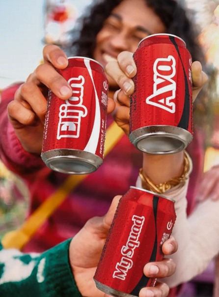

L’eredità della campagna.
Un altro elemento innovativo è l’uso della personalizzazione come leva centrale. Inserire nomi propri sulle confezioni crea un legame diretto e personale con il prodotto, aumentando il coinvolgimento emotivo. Inoltre, la campagna si integra perfettamente con le piattaforme digitali, sfruttando dinamiche di condivisione, viralità e interazione. In questo modo, Coca-Cola riesce a costruire una narrazione distribuita, in cui sono gli stessi consumatori a diffondere il messaggio.
L’impatto della campagna è molto forte sia in termini di visibilità che di risultati commerciali. I consumatori si sentono coinvolti emotivamente, spinti dal desiderio di trovare il proprio nome o quello delle persone care, aumentando anche gli acquisti ripetuti. Sui social media si genera un’enorme quantità di contenuti condivisi, rafforzando la presenza digitale del brand. “Share a Coke” diventa così uno dei casi più emblematici dell’era digitale, dimostrando come il successo di una campagna dipenda dalla capacità di rendere le persone protagoniste dell’esperienza e di costruire relazioni autentiche e durature.
